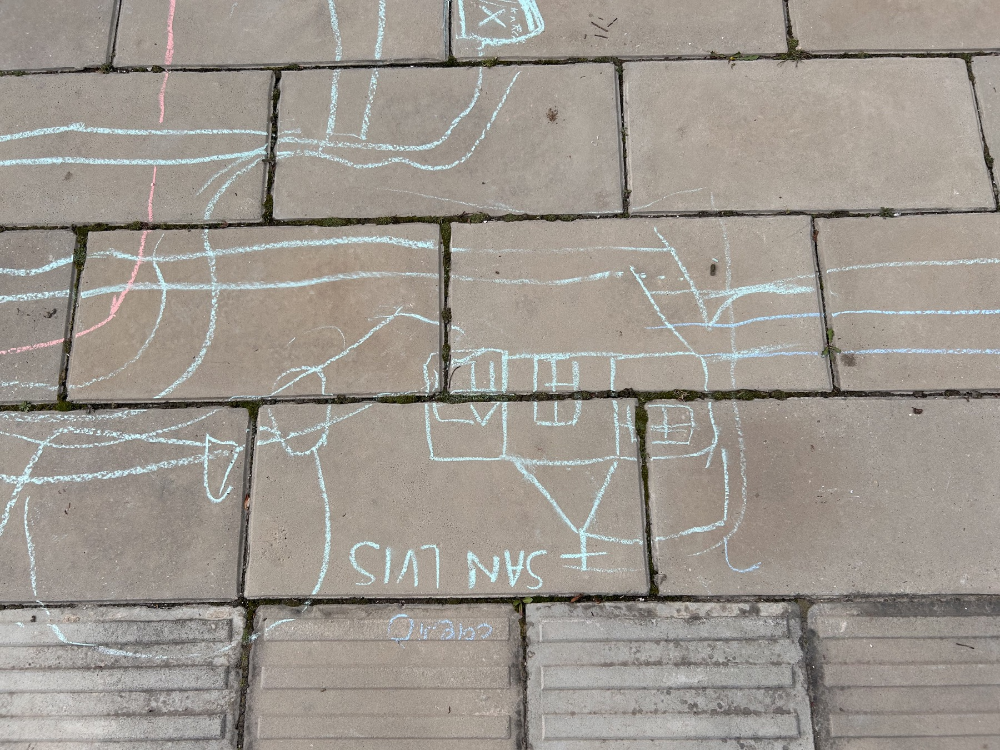
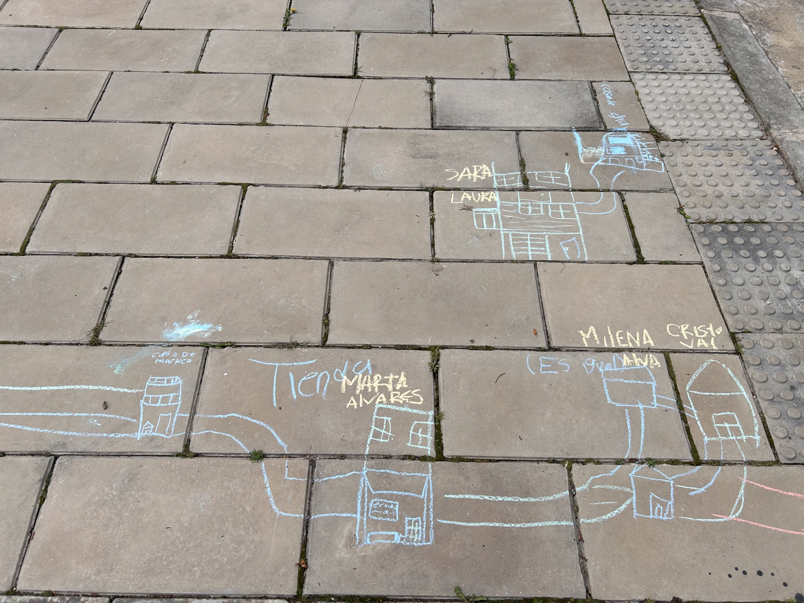
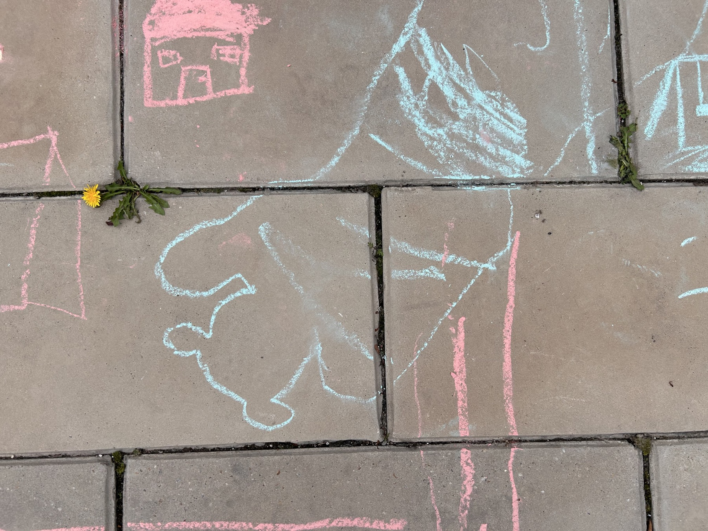
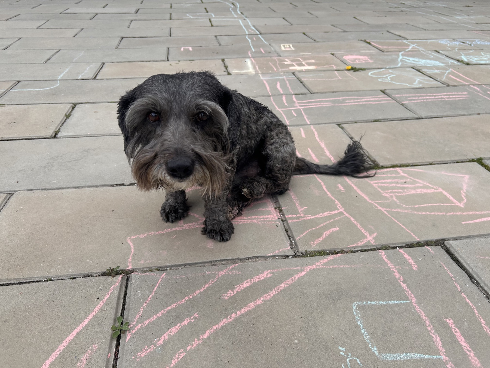
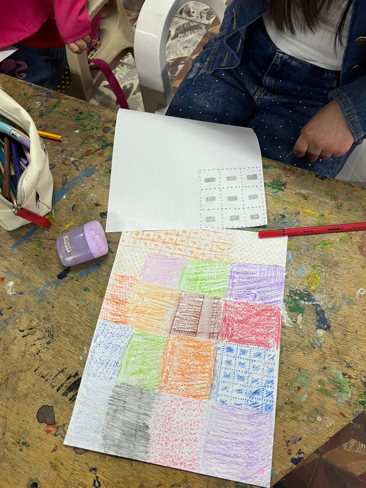
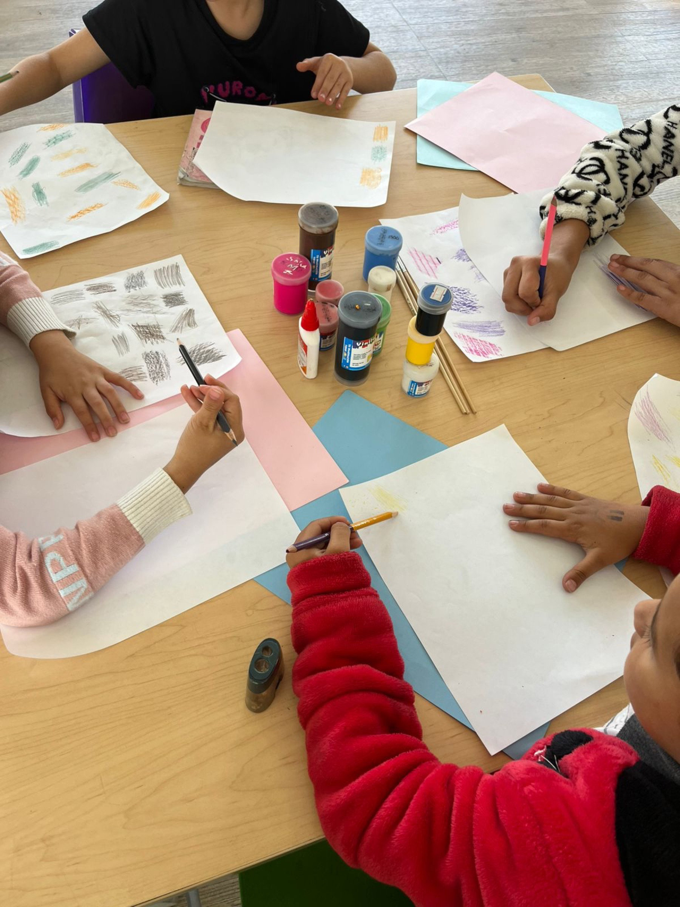

Avance · Mayo 2026
Territorio Creador
- Andrés Felipe Becerra Pedraza
- Maestría en Industrias Creativas y Culturales
- Universidad El Bosque
Usa flechas izquierda y derecha para mover entre diapositivas.
Avance · Mayo 2026
Laboratorio artístico de expresión cultural rural
Lo que traigo hoy
Esta semana se realizó un ejercicio piloto de la metodología I+C en la vereda San Antonio Norte, Duitama, en articulación con CULTURAMA.

Datos del piloto
Acompañamiento: gestora cultural de CULTURAMA + investigador.
El piloto en imágenes
La cartografía empezó por lo estructural: iglesia, parque y calles. Luego derivó hacia lo significativo: casas, vecinos, vacas, árboles, tiendas y un perro específico con nombre propio.

Mapa en el piso
Casas y recorridos
Vínculos vivosEl piloto en imágenes

Registro material
Exploración visualTres hallazgos del piloto
Los niños mencionaron repetidamente la fábrica Toliboy como referente importante del territorio. La cultura no está solo en lo que las instituciones reconocen, sino en lo que las personas nombran cuando se abre el espacio.
Dibujaron vecinos por su nombre e incluso a un perro específico. La cartografía registra vínculos vivos, no solo lugares.
Vacas, árboles y animales del recorrido cotidiano muestran que el entorno no es fondo del territorio: es centro.
Cierre
Esta primera aproximación permitió observar que, cuando se abre un espacio de creación sencillo y situado, aparecen relatos, vínculos y referentes del territorio que normalmente no entran en la programación cultural formal.
Gracias.